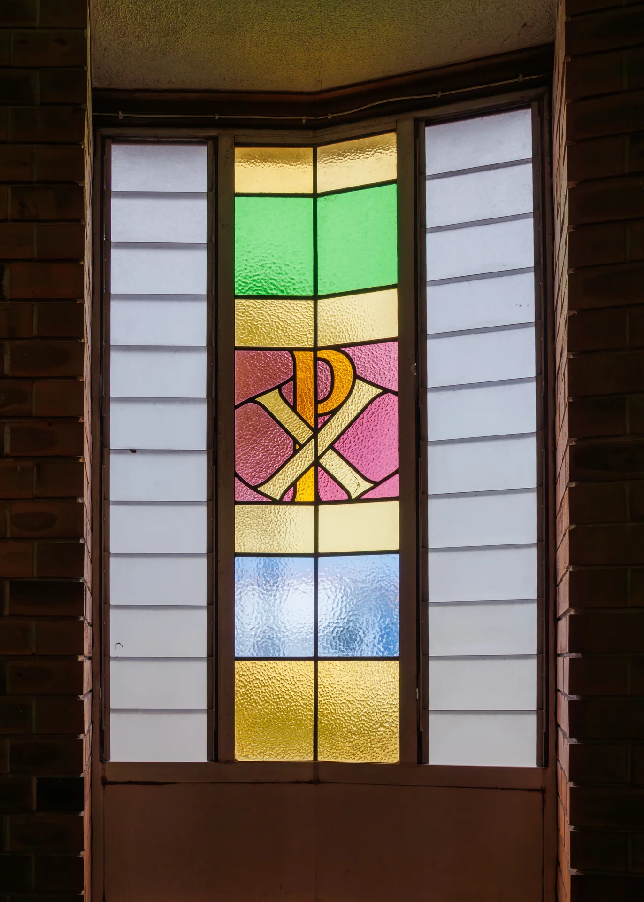
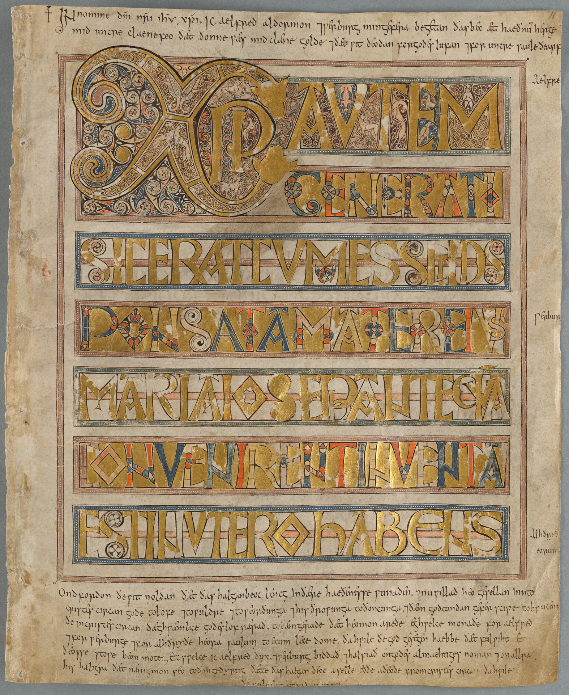
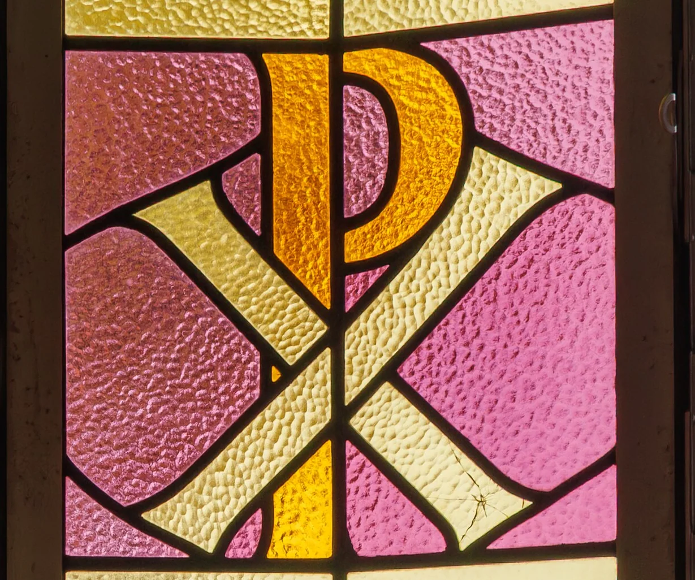
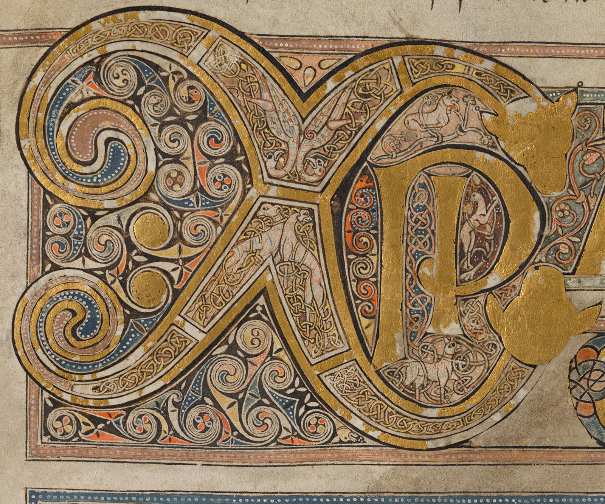

아직 펼치지 않은 카드매일 쓰는 말에 숨은 성경 · 3Xmas, holiday, Halloween‘Xmas’의 X는 그리스도를 지운 걸까요, 아니면 다른 뜻일까요?X자랑 P자가 겹쳐진 무늬, 무슨 뜻일까?
8세기 중엽 · 9세기잉글랜드 켄트 · 캔터베리
Xmas, holiday, Halloween
8세기 중엽 잉글랜드 켄트에서, 금으로 글자를 입힌 복음서가 만들어졌어요. 마태복음 1장 18절이 시작되는 쪽에는 ‘그리스도’가 커다란 금빛 X와 P로 그려져 있어요. 손잡이를 밀어, 그 X와 오늘 성당 창의 X를 겹쳐 보세요.
아주 옛날 영국에서 금으로 글자를 꾸민 책을 만들었어. 그 책에 커다란 X가 있는데, ‘그리스도’라는 이름의 첫 글자래. 오늘 교회 창문의 X랑 겹쳐 볼까?
검수 전 시안이에요(기준서 1판). 장면에는 기록에 있는 것만 옮겼고, 기록마다 다른 것은 그렇다고 밝혔어요. 상상은 ‘눈 감고 상상해 보기’에만 썼어요.
시안 확인용카드 단계 미리 보기
1
바이킹에게서 되찾은 쪽
8세기 중엽, 잉글랜드 남동쪽 켄트에서 금빛 글자로 꾸민 복음서가 만들어졌어요. 지금은 스웨덴 스톡홀름의 국립도서관에 있어서 ‘스톡홀름 코덱스 아우레우스’라고 불러요. 라틴어로 ‘금빛 책’이라는 뜻이에요.
이 쪽은 마태복음 1장 18절이 시작되는 곳이에요. 첫 낱말 ‘그리스도의’(라틴어 크리스티)를 커다란 X와 P로 그렸어요. X와 P는 그리스 글자 ‘키’와 ‘로’, 곧 그리스어 ‘크리스토스(그리스도)’의 첫 두 글자예요.

9세기에 이 책은 바이킹 군대에게 빼앗겼어요. 켄트의 귀족 앨프레드와 아내 웨르부르크가 순금을 치르고 되찾아, 캔터베리의 그리스도 교회에 바쳤어요. 두 사람은 그 사연을 9세기 중엽, 바로 이 쪽 위아래 여백에 옛 영어로 적어 두었어요. 옛 영어는 지금 영어의 아주 오래된 모습이에요.
맨 위 첫 줄은 라틴어 “우리 주 예수 그리스도의 이름으로”로 시작해요. 여기서도 ‘그리스도’를 작은 글씨로 xpi라고 줄여 썼어요. 금빛 XP와 같은 글자예요.
바이킹이 이 책을 가져갔는데, 어떤 부부가 금을 주고 되찾았대. 그 이야기를 책 맨 위와 맨 아래에 적어 놨어.
물어보기그림에서 커다란 X를 찾았어? 그 옆의 P도 보여?
2
같은 두 글자
‘Xmas’의 X는 그리스도를 지운 표시가 아니에요. 이 쪽의 X처럼, 그리스도의 그리스어 이름 첫 글자예요. 손으로 책을 베껴 쓰던 사람들은 이 거룩한 이름을 XP, XPI처럼 줄여 쓰곤 했어요.
1,200년 넘게 떨어진 두 X를 겹쳐 보세요. 하나는 양피지 위의 금박이고, 하나는 2025년에 찍은 뉴질랜드 오클랜드 노스코트 성당 창의 색유리예요.
가운데 손잡이를 밀어 8세기의 금빛 X와 오늘 성당 창의 X를 겹쳐 보세요.


왼쪽 · 같은 쪽의 X와 P 부분, 750년 무렵 · 지은이 모름 · 스웨덴 국립도서관 사진 · 퍼블릭 도메인(CC0) · 위키미디어 공용
오른쪽 · 노스코트 성당 창의 X와 P, 2025년 · 사진: Bjankuloski06 · CC BY 4.0 · 위키미디어 공용
같은 자리를 찍은 사진이 아니라, 같은 두 글자를 겹쳐 본 거예요. 옛 쪽은 X와 P를 나란히 쓰고 그 속에 작은 짐승을 그려 넣었어요. 오늘 창은 두 글자를 한데 겹쳤어요. 모양은 바뀌었지만, 둘 다 그리스도의 이름 첫 두 글자예요.
영어 ‘크리스마스’도 이렇게 적혔어요. 12세기 초에 베낀 『앵글로색슨 연대기』 사본에는 ‘xpes mæssan’(그리스도의 미사 때)이라는 줄이 보여요. 1551년 에드워드 6세의 편지에는 X 위에 줄을 그은 ‘X̄temmas’가 나와요.
1,200년도 더 된 X랑 오늘 창문의 X, 모양은 달라도 같은 글자야. 둘 다 ‘그리스도’라는 뜻이야.
물어보기손잡이를 밀어 봐. 옛날 X 속에 숨은 작은 짐승이 보여?
눈 감고 상상해 보기
금박을 입힌 큰 글자가 촛불에 반짝이는 쪽을 떠올려 보세요. 두꺼운 양피지를 넘길 때 나는 바스락 소리, 펜촉이 여백을 긁는 소리. 누군가 맨 위에 조심스럽게 첫 줄을 적어요. “우리 주 예수 그리스도의 이름으로….”
눈을 감아 봐. 금빛 글자가 반짝이는 커다란 책이 있어. 누군가 펜으로 맨 위에 조그맣게 글을 쓰고 있어. 어떤 이야기를 적고 있을까?
나의 자리
내가 무심코 줄여 부르는 이름 속에, 잊힌 뜻이 숨어 있지는 않나요?
네 이름의 첫 글자로 무늬를 만들어 볼까?
마음에 닿는 한 줄을 고르거나 직접 써 보세요. 한 줄을 남기면 이 자리의 도장이 찍혀요. 이 기기에만 저장돼요.
더 깊이
궁금한 칸만 펼쳐 읽어도 괜찮아요.
알고 보면
키와 로 그리스어로 그리스도는 ΧΡΙΣΤΟΣ(크리스토스)라고 써요. 첫 두 글자 Χ(키)와 Ρ(로)를 합친 표시를 ‘키로’라고 해요. 라틴어 성경을 베껴 쓴 사람들도 그리스도의 이름을 XPI처럼 이 그리스 글자로 적었어요.
여백의 글 옛 영어 글은 이렇게 시작해요. “나 앨프레드 귀족과 내 아내 웨르부르크는 이 책들을 이교도 군대에게서 우리의 깨끗한 돈, 곧 순금으로 얻었다.”(이 안내서가 옮김) 두 사람은 책을 그리스도 교회에 바치며, 다달이 자기들과 딸 알스리스를 위해 읽어 달라고 부탁했어요. 누구도 이 책을 내주거나 옮기지 말라는 말도 적었어요.
크리스테스 그 글은 책을 바칠 곳을 ‘Cristes circan’, 곧 ‘그리스도의 교회’라고 불러요. ‘크리스마스’도 ‘그리스도의 미사’라는 옛 영어에서 왔어요.
스웨덴까지 이 책은 16세기에 스페인으로 건너갔어요. 1690년 마드리드에서 스웨덴 사람 요한 가브리엘 스파르벤펠트가 스웨덴 왕립도서관을 위해 샀어요.
holiday와 Halloween
holiday 옛 영어 ‘할리그대그(hāligdæg)’, 곧 ‘거룩한 날’에서 왔어요. 14세기에는 ‘교회의 축일’과 ‘일을 쉬는 날’을 함께 뜻했고, 16세기에 두 뜻이 갈라졌어요.
Halloween ‘모든 성인의 날 전날 밤(All Hallows’ Even)’이 줄어든 말이에요. ‘핼로(hallow)’는 옛말로 ‘성인’이에요. 10월 31일을 ‘alle halwe eue’라고 부른 기록이 1300년 무렵부터 있어요.
11월 1일 교황 그레고리오 3세(731~741년)가 로마 성 베드로 대성당의 한 경당을 11월 1일, 모든 성인을 기리며 봉헌했어요. 그레고리오 4세는 837년에 이 축일을 널리 지키게 했어요. 동방 교회는 오순절 다음 첫 주일에 모든 성인을 기려요.
기록마다 다른 점
‘1021년’이라는 숫자 많은 글이 X 줄임이 1021년 『앵글로색슨 연대기』에 나온다고 써요. 1021년은 그 줄이 다루는 해이고, 그 사본은 1100년 무렵에 쓰였다고 해요. 다른 사전은 피터버러 사본의 1101년 항목(1121~1131년 무렵 베낌)을 예로 들어요. 그래서 이 카드는 해가 분명한 그 사본의 예를 들었어요.
만든 곳 이 복음서는 흔히 캔터베리에서 만들었다고 말해요. 미국 스미스소니언의 해설은 켄트 안의 캔터베리와 서넷의 민스터를 함께 꼽아요.
처음 ‘Xmas’ 1551년 편지의 글자를 사전마다 조금 다르게 옮겨요(‘X̄temmas’, ‘X’tenmas’). 지금 모양 그대로의 ‘Xmas’는 1721년 기록이 처음이라고 해요.
직접 보기
확인한 날 · 2026년 11월 18일 · 바뀌기 쉬운 정보라 정기적으로 다시 확인해요
이 복음서는 스웨덴 스톡홀름의 국립도서관에 있어요. 스웨덴 국립도서관은 모든 쪽을 사진으로 찍어 누구나 쓸 수 있게 공개했어요. 이 카드의 그림도 그 사진이에요.
전시 여부는 바뀔 수 있으니, 직접 보러 가실 때는 도서관 누리집에서 먼저 확인해 주세요.
두 X 겹쳐 보기 금박
손잡이를 양쪽 끝까지 밀어 8세기의 X와 오늘의 X를 다 보면 카드에 금박이 입혀져요.
손잡이를 양쪽 끝까지 밀어 두 X를 다 보기
아이와 함께 끝까지 채색
아이와 함께 ‘영화처럼 보기’를 끝까지 보면 카드가 채색돼요.
아이와 함께 ‘영화처럼 보기’를 끝까지 보기
근거 보기 (10)
- 스미스소니언 국립 아시아 미술관: The Stockholm Codex Aureus — 8세기 중엽 켄트(캔터베리나 서넷의 민스터), 키로 쪽의 금박과 작은 짐승, 9세기 중엽 여백 글, 바이킹 몸값, 그리스도 교회, 16세기 스페인, 1690년 마드리드에서 스파르벤펠트가 삼
- 케임브리지 eSawyer S 1204a: 여백 글의 옛 영어 본문과 요약 — “In nomine Domini nostri Iesu Christi”, 순금으로 되찾음, Cristes circan, 다달이 읽어 달라는 부탁, 11r쪽, 9세기 중엽
- 브리태니커: sacred monogram — 키로는 ΧΡΙΣΤΟΣ의 첫 두 그리스 글자, XPI는 여러 사본에서 그리스도를 뜻함
- 워드오리진스(데이비드 윌턴, 2023): Christmas / Xmas — X는 키, 피터버러 사본 1101년 항목(1121~1131년 베낌)의 xpes mæssan, 옥스퍼드 영어 사전의 1551년·1721년 예
- 워드히스토리스(2016): Xmas — 1100년 무렵 쓴 연대기의 1021년 항목, 1551년 11월 26일 에드워드 6세 편지의 X̄temmas
- 어원 사전 Etymonline: holiday — 옛 영어 hāligdæg, 14세기의 두 뜻, 16세기에 갈라짐
- 어원 사전 Etymonline: Halloween — 1560년대 스코틀랜드, 1300년 무렵 alle halwe eue, hallow는 성인
- 브리태니커: All Saints’ Day — 서방 11월 1일, 그레고리오 3세의 경당, 그레고리오 4세 837년, 동방은 오순절 다음 첫 주일, 전날 밤이 핼러윈
- 위키미디어 공용: 코덱스 아우레우스 11r쪽(p023) — 스웨덴 국립도서관 디지털화, CC0
- 위키미디어 공용: 노스코트 세인트 메리 성당의 키로 창 사진 정보(2025년 7월 8일)
그림·사진·소리 출처
‘처음 만나는 기독교 문화’의 깊은 카드예요. 실제 인물의 사진은 쓰지 않았어요. 카드 단계와 남긴 글은 이 기기에만 저장돼요.